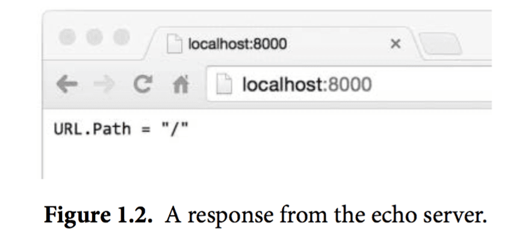
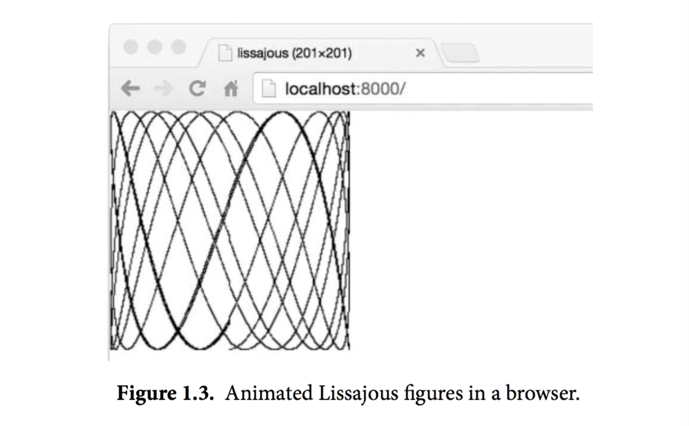

- KusonStack一站式可编程配置技术栈(Go): https://github.com/KusionStack/kusion
- KCL 配置编程语言(Rust): https://github.com/KusionStack/KCLVM
- 凹语言™: https://github.com/wa-lang/wa
1.7. Web服务
Go语言的内置库使得写一个类似fetch的web服务器变得异常地简单。在本节中，我们会展示一个微型服务器，这个服务器的功能是返回当前用户正在访问的URL。比如用户访问的是 http://localhost:8000/hello ，那么响应是URL.Path = "hello"。
gopl.io/ch1/server1
// Server1 is a minimal "echo" server.
package main
import (
"fmt"
"log"
"net/http"
)
func main() {
http.HandleFunc("/", handler) // each request calls handler
log.Fatal(http.ListenAndServe("localhost:8000", nil))
}
// handler echoes the Path component of the request URL r.
func handler(w http.ResponseWriter, r *http.Request) {
fmt.Fprintf(w, "URL.Path = %q\n", r.URL.Path)
}
我们只用了八九行代码就实现了一个Web服务程序，这都是多亏了标准库里的方法已经帮我们完成了大量工作。main函数将所有发送到/路径下的请求和handler函数关联起来，/开头的请求其实就是所有发送到当前站点上的请求，服务监听8000端口。发送到这个服务的“请求”是一个http.Request类型的对象，这个对象中包含了请求中的一系列相关字段，其中就包括我们需要的URL。当请求到达服务器时，这个请求会被传给handler函数来处理，这个函数会将/hello这个路径从请求的URL中解析出来，然后把其发送到响应中，这里我们用的是标准输出流的fmt.Fprintf。Web服务会在第7.7节中做更详细的阐述。
让我们在后台运行这个服务程序。如果你的操作系统是Mac OS X或者Linux，那么在运行命令的末尾加上一个&符号，即可让程序简单地跑在后台，windows下可以在另外一个命令行窗口去运行这个程序。
$ go run src/gopl.io/ch1/server1/main.go &
现在可以通过命令行来发送客户端请求了：
$ go build gopl.io/ch1/fetch
$ ./fetch http://localhost:8000
URL.Path = "/"
$ ./fetch http://localhost:8000/help
URL.Path = "/help"
还可以直接在浏览器里访问这个URL，然后得到返回结果，如图1.2：

在这个服务的基础上叠加特性是很容易的。一种比较实用的修改是为访问的url添加某种状态。比如，下面这个版本输出了同样的内容，但是会对请求的次数进行计算；对URL的请求结果会包含各种URL被访问的总次数，直接对/count这个URL的访问要除外。
gopl.io/ch1/server2
// Server2 is a minimal "echo" and counter server.
package main
import (
"fmt"
"log"
"net/http"
"sync"
)
var mu sync.Mutex
var count int
func main() {
http.HandleFunc("/", handler)
http.HandleFunc("/count", counter)
log.Fatal(http.ListenAndServe("localhost:8000", nil))
}
// handler echoes the Path component of the requested URL.
func handler(w http.ResponseWriter, r *http.Request) {
mu.Lock()
count++
mu.Unlock()
fmt.Fprintf(w, "URL.Path = %q\n", r.URL.Path)
}
// counter echoes the number of calls so far.
func counter(w http.ResponseWriter, r *http.Request) {
mu.Lock()
fmt.Fprintf(w, "Count %d\n", count)
mu.Unlock()
}
这个服务器有两个请求处理函数，根据请求的url不同会调用不同的函数：对/count这个url的请求会调用到counter这个函数，其它的url都会调用默认的处理函数。如果你的请求pattern是以/结尾，那么所有以该url为前缀的url都会被这条规则匹配。在这些代码的背后，服务器每一次接收请求处理时都会另起一个goroutine，这样服务器就可以同一时间处理多个请求。然而在并发情况下，假如真的有两个请求同一时刻去更新count，那么这个值可能并不会被正确地增加；这个程序可能会引发一个严重的bug：竞态条件（参见9.1）。为了避免这个问题，我们必须保证每次修改变量的最多只能有一个goroutine，这也就是代码里的mu.Lock()和mu.Unlock()调用将修改count的所有行为包在中间的目的。第九章中我们会进一步讲解共享变量。
下面是一个更为丰富的例子，handler函数会把请求的http头和请求的form数据都打印出来，这样可以使检查和调试这个服务更为方便：
gopl.io/ch1/server3
// handler echoes the HTTP request.
func handler(w http.ResponseWriter, r *http.Request) {
fmt.Fprintf(w, "%s %s %s\n", r.Method, r.URL, r.Proto)
for k, v := range r.Header {
fmt.Fprintf(w, "Header[%q] = %q\n", k, v)
}
fmt.Fprintf(w, "Host = %q\n", r.Host)
fmt.Fprintf(w, "RemoteAddr = %q\n", r.RemoteAddr)
if err := r.ParseForm(); err != nil {
log.Print(err)
}
for k, v := range r.Form {
fmt.Fprintf(w, "Form[%q] = %q\n", k, v)
}
}
我们用http.Request这个struct里的字段来输出下面这样的内容：
GET /?q=query HTTP/1.1
Header["Accept-Encoding"] = ["gzip, deflate, sdch"]
Header["Accept-Language"] = ["en-US,en;q=0.8"]
Header["Connection"] = ["keep-alive"]
Header["Accept"] = ["text/html,application/xhtml+xml,application/xml;..."]
Header["User-Agent"] = ["Mozilla/5.0 (Macintosh; Intel Mac OS X 10_7_5)..."]
Host = "localhost:8000"
RemoteAddr = "127.0.0.1:59911"
Form["q"] = ["query"]
可以看到这里的ParseForm被嵌套在了if语句中。Go语言允许这样的一个简单的语句结果作为局部的变量声明出现在if语句的最前面，这一点对错误处理很有用处。我们还可以像下面这样写（当然看起来就长了一些）：
err := r.ParseForm()
if err != nil {
log.Print(err)
}
用if和ParseForm结合可以让代码更加简单，并且可以限制err这个变量的作用域，这么做是很不错的。我们会在2.7节中讲解作用域。
在这些程序中，我们看到了很多不同的类型被输出到标准输出流中。比如前面的fetch程序，把HTTP的响应数据拷贝到了os.Stdout，lissajous程序里我们输出的是一个文件。fetchall程序则完全忽略到了HTTP的响应Body，只是计算了一下响应Body的大小，这个程序中把响应Body拷贝到了ioutil.Discard。在本节的web服务器程序中则是用fmt.Fprintf直接写到了http.ResponseWriter中。
尽管三种具体的实现流程并不太一样，他们都实现一个共同的接口，即当它们被调用需要一个标准流输出时都可以满足。这个接口叫作io.Writer，在7.1节中会详细讨论。
Go语言的接口机制会在第7章中讲解，为了在这里简单说明接口能做什么，让我们简单地将这里的web服务器和之前写的lissajous函数结合起来，这样GIF动画可以被写到HTTP的客户端，而不是之前的标准输出流。只要在web服务器的代码里加入下面这几行。
handler := func(w http.ResponseWriter, r *http.Request) {
lissajous(w)
}
http.HandleFunc("/", handler)
或者另一种等价形式：
http.HandleFunc("/", func(w http.ResponseWriter, r *http.Request) {
lissajous(w)
})
HandleFunc函数的第二个参数是一个函数的字面值，也就是一个在使用时定义的匿名函数。这些内容我们会在5.6节中讲解。
做完这些修改之后，在浏览器里访问 http://localhost:8000 。每次你载入这个页面都可以看到一个像图1.3那样的动画。

练习 1.12： 修改Lissajour服务，从URL读取变量，比如你可以访问 http://localhost:8000/?cycles=20 这个URL，这样访问可以将程序里的cycles默认的5修改为20。字符串转换为数字可以调用strconv.Atoi函数。你可以在godoc里查看strconv.Atoi的详细说明。

|

|